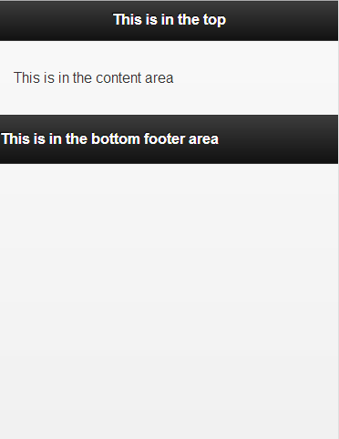
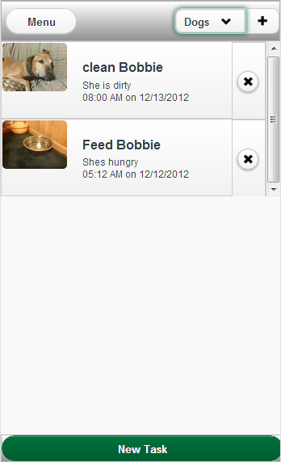

User Interface - jQuery Mobile
Pretty much all of the user interface in Visual Keeper is done using jQuery Mobile. jQuery Mobile gives you the whole "mobile" look that you want in the app. If you haven't used jQuery Mobile before I suggest you check the docs at http://www.jquerymobile.com/docs. Poke around on the docs page to see how everything works; visit the docs page with your phone to see how it works on a device. The pages of Visual Keeper will be made with the jQuery Mobile page structure. A single .html document contains all of the pages for the app, and jQuery Mobile will hide and show pages as needed. Here is an example of the page structure.
Each page is a div with the attribute 'data-role="page"'. That data-role="page" attribute tells jQuery Mobile that you want it to display the div as a page. This is very important because without that the app will not display properly. You will also notice that there are divs within each page that contain the header, content, and footer. These all have special 'data-role' attributes to tell jQuery Mobile how to display them.
That code produces a page that looks like this.
Notice how it just puts the elements that are inside the header div into the top header bar. Similarly, the html elements in the content div is put into the main content area of the page. The same for the footer elements.
We are going to use that page structure throughout the app to divide our html document into separate pages. So to get started on the app we create our index.html file and start setting it up. At this point we can just use the web browser for testing, I suggest Google Chrome just because of the handy inspect feature. If you right click on anything on the page and select "inspect element" it will display information on that element. For more information on Chrome Inspect go here Chrome Inspect. jQuery Mobile likes to add a ton of html to your page when it runs so the inspect helps you find out what jQuery Mobile added. Just be careful not to start copying the jQuery Mobile generated code into your html file because that is a good way to muddy things up.
For right now I'm using the cdn hosted jQuery Mobile css and scripts. When we finish our app we will replace it with a locally saved file. That way the app UI still loads if there is no internet connection. You can find the html code you need to use the current cdn hosted jQuery Mobile files on the download page of the jQuery Mobile website. You need these two scripts and one css file to get the page to display properly. Make sure you call the jQuery script before you call the jQuery Mobile script because jQM needs jQuery to run.
So now that the html file is set up we can start adding pages for the app. The pages go into the body tag of your html document and the first page in the body is the first page of the app to load. Make sure you give good id attributes to your page div, because you will be using the id for things like binding events and changing pages. For right now just make a blank page for each page in your app. From the mockup you should know what pages to include, from my experience you will probably have to create more pages and possibly remove some in the process. If you have any modal dialogs in the app you make pages for those too; in Visual Keeper we used dialogs for the date/time picker stuff and the delete confirmation. Here is the blank page layout of Visual Keeper.
So now we have a div for each page, and each div has the 'data-role=page' attribute. Notice how each page has a unique id so that we can tell the pages apart. You may notice that some of the pages like the 'View Task' page have the 'data-add-back-btn="true"' attribute, when you set this attribute to true jQuery Mobile automatically puts a back button in the header section of that page. That button already has the code to go back so you don't have to make it work, but if you want a back button elsewhere you have to make that yourself.
Now that you have the app UI blocked out it is time to fill it in. Before you start a page figure out what jQuery Mobile UI elements you will be using and what you will have to make yourself. Most of the time you can find a jQM UI element that works for you, just poke around on the docs page for a bit. As an example I will break down the main page of Visual Keeper.
Don't worry about the colors, for right now lets focus on the UI elements themselves. Lets start with the header. The menu button will simply be a jQM button, you make something display as a button by setting it's data-role attribute to "button". Go here jQuery Mobile Docs - Buttons for more information on buttons. In this case we used an anchor tag with the data-role attribute set to "button".
The list select menu on the left is done using normal html for a select menu. The new list button is also an anchor tag with the data-role attribute set to "button". To join the list select and new list in that little rounded box we had to wrap both elements in a div with the data-role attribute of that div set to "controlgroup". You can find out more about control groups at the jQuery Mobile Docs - Grouped Buttons.
If you haven't noticed already, you should be working with the jQuery Mobile Docs page open, because you will be looking things up constantly. To get the elements in the header to display like that we had to do a little more work. First of all you have to split the header into a two column grid so you can put the menu button in the first column and the list controlgroup on the right. This is done using the layout grids from jQuery Mobile, see here jQuery Mobile - Content Grids for more information. Then to get the control group on the right we had to add some custom css. Here is the header code all put together.
A lot of the time it is a struggle to get things to work the way you want. I had to do a bit of messing with the styles to get things looking alright. Notice that I added the 50% width style to the menu button to make it less wide. We had to float the control group to the right to get it to stick over there. Take note of the way the two column grid works, the outside div has a class of "ui-grid-a" which sets up the two columns and then each column is contained in a div. The columns have to have their class attribute set to some form of "ui-block-a", "ui-block-b", "ui-block-c" and so on for each column.
The menu button and new task list button both have a 'data-rel' attribute. These are used to tell jQuery that the page you are linking to should be displayed as a dialog or popup. The menu on the home page is a popup so the link to the menu has the data-rel attribute set to "popup".
Next we will look at the popup. Popups are like a little section of the page that are displayed over the top of it. You can use popups to make menus like in our case or for other things like messages. Lets look at the Visual Keeper popup.
So our popup just needs to contain a list of links to the menu items. A popup is just a div with its data-role attribute set to "popup". Where you place the popup div is important, if you place it inside of the content, header or footer it will be displayed all of the time. So you want to put the popup inside of the page div but outside of the content, header or footer divs. When doing lists with jQuery Mobile you just make a regular html unordered list but you set its data-role attribute to "listview". To find out more about list views go to jQuery Mobile - Listview, listviews can come in many different forms and we used them throughout Visual Keeper. Here is the code for the popup:
You can see how we used the data-icon attribute to remove the little arrow icon on the "Share" link. Make sure you put things that are inside of the listview inside of "<li>" tags, otherwise the list wont display correctly.
Moving onto the content area, the main ui element here is the split button list. We used a split button list because it can show a picture on the left part which is one button and a button on the right for something else. You can find out more about split button lists at jQuery Mobile - Split Button List. In the case of Visual Keeper we don't actually have anything inside of the listview in the html file. That is because we will use javascript to generate the html and insert it based on the tasks we need to display. So the code inside of the content div will just be the <ul> and </ul> tags with data-role attribute set to listview. Although we are going to generate the html with javascript it is a good idea to hard code some html just to see how it looks, then when we write the javascript function we will just chop up the html however we need to. Each task in the listview will be inside of a <li> tag and to make it a split button list, we add an anchor tag as the last element inside of the <li>. The first <img> tag inside of the <li> tag will be the image on the far left. Here is what the content code looks like with an example hardcoded list item, I will cover how to split this code up into the javascript in the next chapter.
Last section to cover is the footer. This is pretty simple because its just the one "New Task" button. Here is the code for the whole page:
So now that we have that one page made, we can work on the other pages. I wont go into detail on every page because I think you get the idea of how to build a page from the jQuery UI elements. One thing I want to touch on really quick is the way you link from one page to the next. To make a link from one page to the other you have the "href" attribute of the link set to the id of the destination page. You put the id in as if you were doing a jQuery or CSS selector. For example:
<a href="#page2" data-role="button" >Go to Page 2</a>
This code will create a button that when clicked/tapped will change the page to the page with id = "page2".
As you start fleshing out the pages don't forget you can use the Chrome inspect to try and figure out why things look the way they do. One thing to remember is that you can add some of your own styles to certain elements, just be careful about adding floats and position types of style changes because it can interfere with the jQuery Mobile styles. If things aren't displaying right you might check to make sure you closed all of your tags. Your best friend is going to be the jQuery Mobile Docs, always have them open. When all else fails google/jquery forum/stackoverflow it, someone else may have had a similar problem. Sometimes you may run into a problem where you just can't make the UI you want with the jQuery Mobile UI elements. You could create your own elements using custom css, which is beyond the scope of this tutorial, or change your UI mockup to something more jQuery Mobile friendly.
When you are ready to start picking a color scheme for your app check out the jQuery Mobile Themeroller. The theme roller lets you set the color scheme for themes lettered a through z. After you download the css and link it in your html file, you can select the theme for an element(or entire page if you want) by setting the data-theme attribute to the theme lettering. For example:
<div data-role="page" id="themedPage" data-theme="c">
This is the opening tag for a page that would have the color scheme of the theme lettered c. Of course you would have to include a line like this in your html file to link to the theme you downloaded:
<link rel="stylesheet" href="themes/VisualKeeper.css" />
Where the href attribute is the path to the theme css that you downloaded. If you look at the footer section of the Visual Keeper home page you will see that we used theme c for the button to add a new task. We did that so we could set the color of that button green while keeping the rest of the buttons on the page the gray color. Find out more about themes here jQuery Mobile - Themes
If you want to see the whole html code for Visual Keeper you can check it out at Github Visual Keeper - index.html